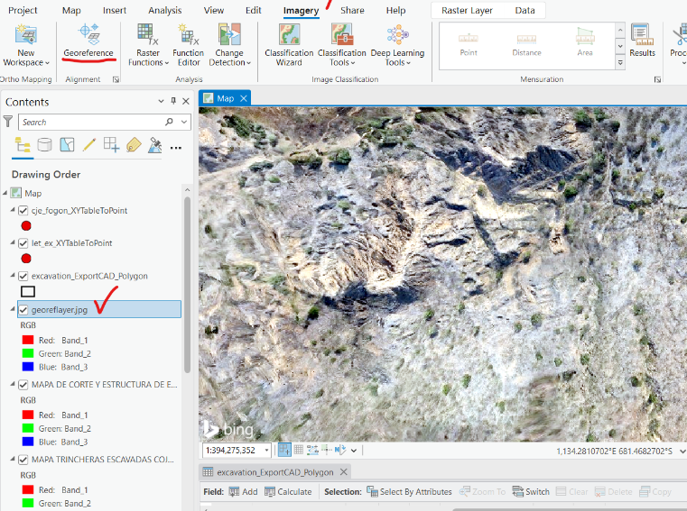
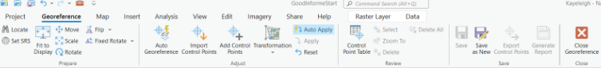

Georeferencing
- Select the image layer and go to Imagery tab to click Georeference under Alignment. 
- Once Georeferencing is selected, a new action pane opens. Use the Adjust panel to automatically georeference the image to import or add control points. To commit, save as new or save with the control points and transformation you specified. 